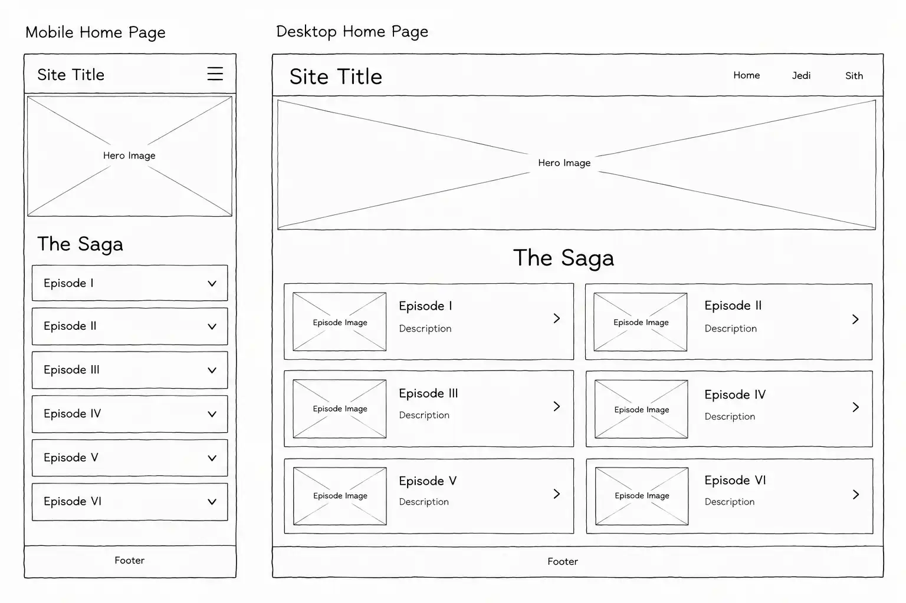

I chose this name for my project because I wanted to cover the story of episodes 1-6, the fall of the Jedi and the rise of the empire, while showing some of my favorite characters both Sith and Jedi.
The purpose of this site is to inform the visitor about the Star Wars universe and its defining story. It will briefly explain the events of Episodes 1-6 and dive into who the Jedi and Sith are, their beliefs, and important characters belonging to each faction.
What happens in episode (user's choice) of Star Wars?
What's the difference between the Sith and the Jedi?
My site will use a combination of colors inspired by the Star Wars intro scenes, using black (#000000) for the main background, white (#FFFFFF) for section headings (h2), light blue (#4BD5EE) for main body text, and finally gold (#FFE81F) for the main section title, subsection headings, and accents.
I plan on using Michroma for titles and headers and Saira Condensed for the body text.
